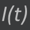
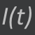

In questo sito è possibile vedere una serie di dimostrazioni il cui tema principale è
il generatore di corrente alternata.
In particolare il lavoro si divide in due campi principali:
calcoli e dimostrazioni relativi alla forza elettromotrice indotta e calcoli e dimostrazioni
relativi alla corrente indotta.
Per navigare sul sito sarà sempre presente una barra in alto per poter spostarsi comodamente
tra le principali pagine. Oltre alle pagine per la forza elettromotrice (ùúÄ(t)) e per la corrente
indotta (I(t)) gli altri due simboli portano a questa pagina e ad una pagina dove si potrà vedere
tutto il lavoro scritto in formato pdf.
In questa pagina si possono trovare, oltre ai tre collegamenti per raggiungere le altre pagine
note gli strumenti utilizzati per creare questo lavoro.